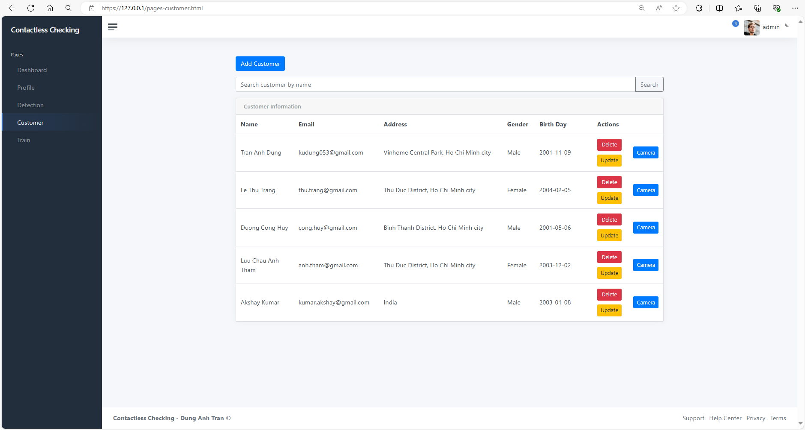
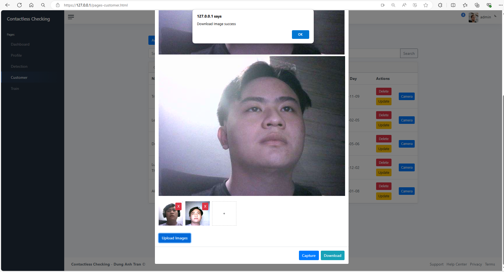
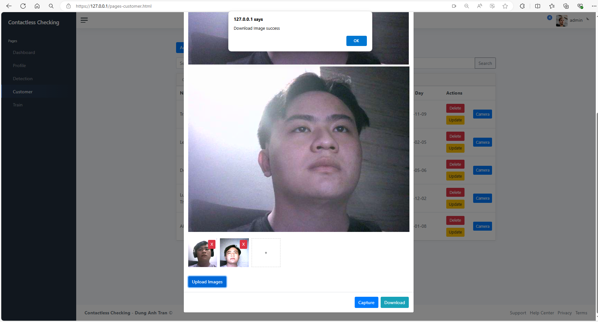

Contacless checking repository works as client-server connection within microservices running on Kubernetes environment. This repository based on the YOLO-v8, FaceNet, ArcFace serves as checking the people registered and recognize by the system.
The repository using socket connection with Spring Boot web as main hosting APIs to ensure the security connection in each API request. The MYSQL database serves as a relational-database to perform query and storage datasets.
The recommend standard development environment is Ubuntu 18.04 LTS or later. You must install Docker, K8s Cluster Resource or minikube, Helm.
Install docker: docker installation
sudo apt-get update
sudo apt-get install ca-certificates curl
sudo install -m 0755 -d /etc/apt/keyrings
sudo curl -fsSL https://download.docker.com/linux/ubuntu/gpg -o /etc/apt/keyrings/docker.asc
sudo chmod a+r /etc/apt/keyrings/docker.asc
# Add the repository to Apt sources:
echo \
"deb [arch=$(dpkg --print-architecture) signed-by=/etc/apt/keyrings/docker.asc] https://download.docker.com/linux/ubuntu \
$(. /etc/os-release && echo "$VERSION_CODENAME") stable" | \
sudo tee /etc/apt/sources.list.d/docker.list > /dev/null
sudo apt-get update
sudo apt-get install docker-ce docker-ce-cli containerd.io docker-buildx-plugin docker-compose-plugin
sudo groupadd docker
sudo usermod -aG docker $USER
newgrp docker
Install kubectl and helm in test/install_3pp.sh:
./install_3pp.sh
This will automatic install kubectl and helm mount it to /usr/bin/local and make it global use.
Install make
sudo apt install make
Building steps are done via make, the builders:
make build image push
make clean init train build image push
The training process will take default hyper-parameters used for YOLOv8, more information, please check: YOLOv8 ultralystics. The hyperparameters can be found in vas.sh.
# Hyper parameters
test -n "$TASK_TYPE" || export TASK_TYPE=detect #DEFAULT task=detect is one of [detect, segment, classify]
test -n "$MODE_TYPE" || export MODE_TYPE=train #DEFAULT mode=train is one of [train, val, predict, export, track]
test -n "$EPOCHS" || export EPOCHS=50 #DEFAULT EPOCHS=50
test -n "$DEFAULT_MODEL" || export DEFAULT_MODEL="yolov8n.pt" #DEFAULT we get the pretrained model for training process
test -n "$IMAGE_SIZE" || export IMAGE_SIZE=640
Using testcon image which integrate the environment for run requirement face_model. Check at test/testcon. In case you don't want to rebuild all necessary library with pip which takes a lot of efforts and time.
In order to using your docker registry. Update DOCKER_REGISTRY in ./vas.sh. Or simply export DOCKER_REGISTRY in your enviroment.
$ export DOCKER_REGISTRY=<your docker-registry>
export AWS_ACCESS_KEY_ID=<your-AWS_ACCESS_KEY_ID>
export AWS_SECRET_ACCESS_KEY=<your-AWS_SECRET_ACCESS_KEY>
export AWS_DEFAULT_REGION=<your-AWS_DEFAULT_REGION> | <DEFAULT us-east-1>
$ EXPORT RELEASE=true
$ EXPORT NAME="-n zrdtuan-ns"
$ make package-helm
$ helm $NAME install ck-app build/helm-build/ck-application/ck-application-1.0.0-5.tgz --set aws.key=$AWS_ACCESS_KEY_ID --set aws.secret=$AWS_SECRET_ACCESS_KEY
For TLS, in this lab I config K8s resource in Docker Desktop => Running on WSL. To check the kubernetes IP.
$ kubectl get nodes -o wide
$ kubectl $NAME get all
NAME READY STATUS RESTARTS AGE
pod/ck-application-authentication-6d76dd99b7-c4xkr 1/1 Running 0 14m
pod/ck-application-client-56cd64698c-4phls 1/1 Running 0 14m
pod/ck-application-mysql-0 2/2 Running 0 14m
pod/ck-application-server-84c4f67c6-ttn72 1/1 Running 0 14m
NAME TYPE CLUSTER-IP EXTERNAL-IP PORT(S) AGE
ck-application-authentication LoadBalancer 10.106.76.107 localhost 8443/TCP 5s
ck-application-client-http LoadBalancer 10.97.223.70 localhost 80/TCP 5s
ck-application-client-https LoadBalancer 10.108.149.254 localhost 443/TCP 5s
ck-application-mysql ClusterIP None <none> 3306/TCP 5s
ck-application-mysql-read ClusterIP 10.110.144.98 <none> 3306/TCP 5s
ck-application-server LoadBalancer 10.111.255.161 localhost 5000/TCP 5s
NAME READY UP-TO-DATE AVAILABLE AGE
deployment.apps/ck-application-authentication 1/1 1 1 14m
deployment.apps/ck-application-client 1/1 1 1 14m
deployment.apps/ck-application-server 1/1 1 1 14m
NAME DESIRED CURRENT READY AGE
replicaset.apps/ck-application-authentication-6d76dd99b7 1 1 1 14m
replicaset.apps/ck-application-client-56cd64698c 1 1 1 14m
replicaset.apps/ck-application-server-84c4f67c6 1 1 1 14m
NAME READY AGE
statefulset.apps/ck-application-mysql 1/1 14m
The service data will be manage and stored inside Persistent Volume Claim (PVC), in case we need to reploy the service if crashed, all the data will be preserved, and automatically mounted into pod.
NAME READY STATUS RESTARTS AGE
ck-application-authentication-6d76dd99b7-c4xkr 1/1 Running 0 11s
ck-application-client-56cd64698c-4phls 1/1 Running 0 11s
ck-application-mysql-0 2/2 Running 0 11s
ck-application-server-84c4f67c6-ttn72 1/1 Running 0 11s
In the contactless checking system, two server are deploying alongwith one MySQL database for back up and one for primary database, and Web Client. To access into the web for user interface. We need to access into the service.
$ kubectl $NAME get svc
This will show all the service to access. Select the Web Client service.
NAME TYPE CLUSTER-IP EXTERNAL-IP PORT(S) AGE
ck-application-authentication LoadBalancer 10.106.76.107 localhost 8443/TCP 5s
ck-application-client-http LoadBalancer 10.97.223.70 localhost 80/TCP 5s
ck-application-client-https LoadBalancer 10.108.149.254 localhost 443/TCP 5s
ck-application-mysql ClusterIP None <none> 3306/TCP 5s
ck-application-mysql-read ClusterIP 10.110.144.98 <none> 3306/TCP 5s
ck-application-server LoadBalancer 10.111.255.161 localhost 5000/TCP 5s
Access https://127.0.0.1 or https://localhost to navigate the Web Client. If access, it will navigate to login page. All the cluster using TLS certificates to authenticate all resources.

Enter the Username/Password. By default the API Server created default Admin account. Use the credentials to login into pages.
The homepage will display all analytics metrics and record all check-in times, with the ability to filter by date.
credentials: Admin/Admin@123

First, create a set of registered customers in the system. Capture all images and send them to the backend, where they will be stored in both a local and a remote S3 bucket to prevent data loss in case of a system crash.

We can edit all customer information and create a new image dataset for the check-in system, which will be sent to train the ArcFaceModel. To obtain image data, we can either upload images or capture them using a camera device.
 

The collected images will be trained using Jenkins CI. Enter the appropriate parameters and trigger the Jenkins pipeline to train the model with the collected datasets.
The trained model will be used to detect customer images. On the detection page, a snapshot of the customer's image will be sent to the model server for analysis, and the results will be returned to the client.